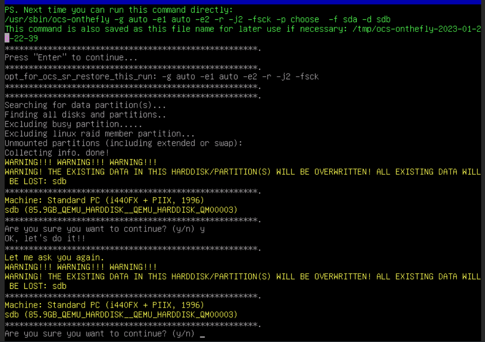
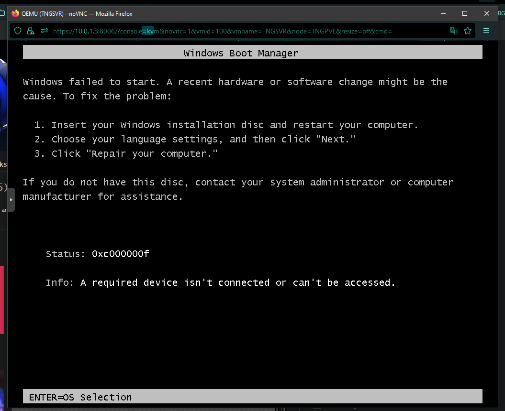
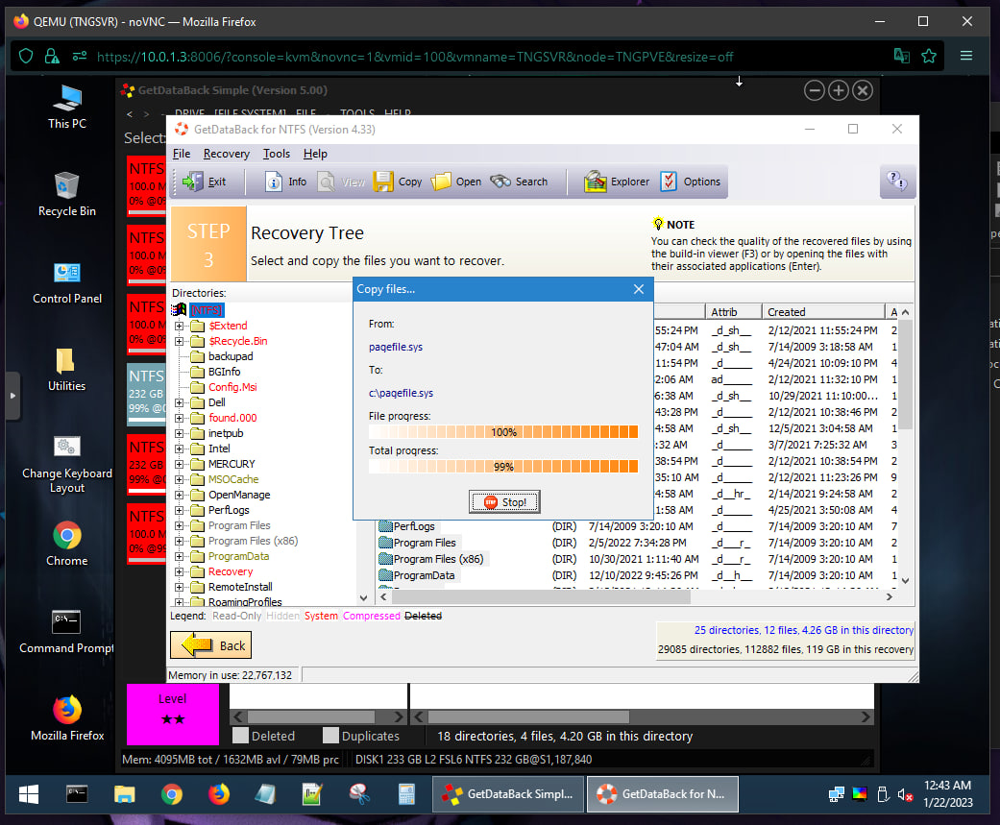
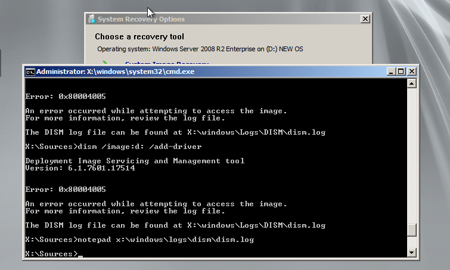
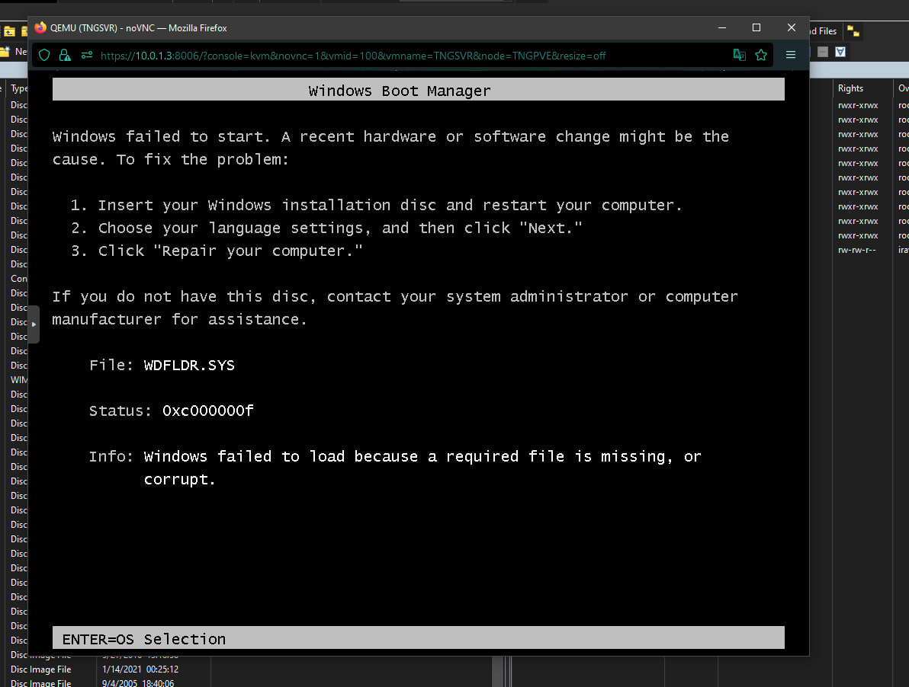
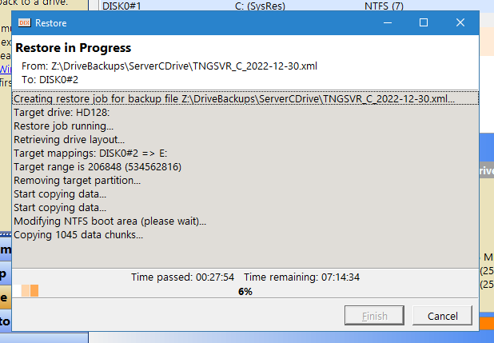
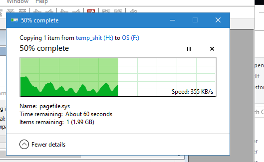
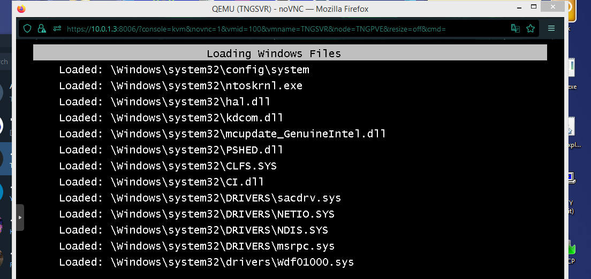
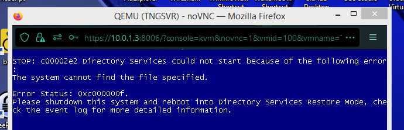
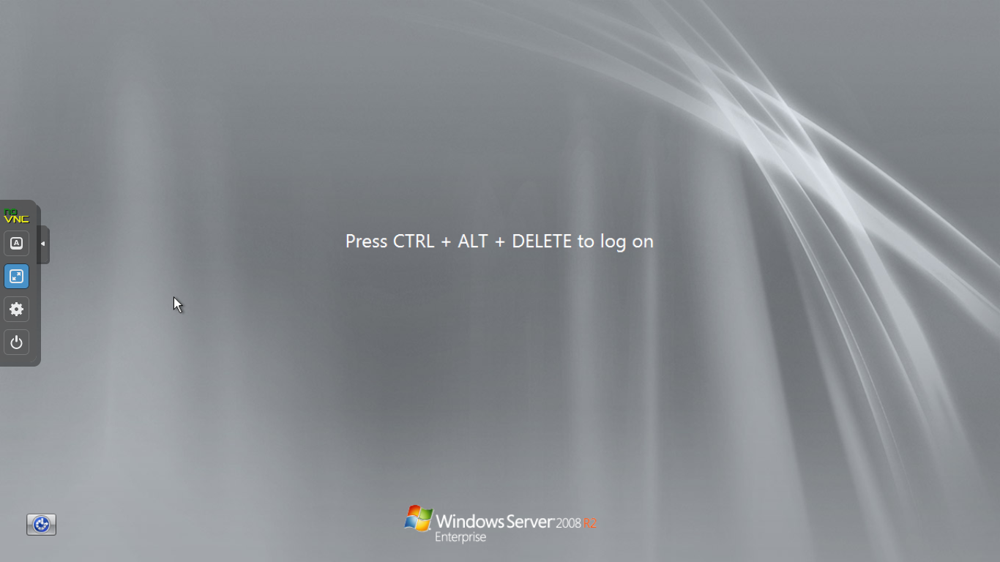

i've just got a new server that i'm fixing to migrate to, replacing my current (as of now) PowerEdge T310.
this requires me to to do a Proxmox migration (not just putting in my existing Proxmox install drive in the new server).
this last weekend (as of right now it's tuesday) i was planning to do this migration, with one thing i had to do left... clone a VM.
back when i set up my current poweredge's proxmox install in Jan. 2022, before then it used to be a normal Windows Server 2008 R2 machine, running everything on there.
in hindsight, it was kinda dumb, as that install runs a domain controller, however obviously proxmox had many many advantages with many VMs you can run, with many recommendations from friends.
i didn't want to lose that install as it had lots of stuff running that i wanted to keep running (and later migrated to other server VMs, as it's a DC, but was running lots of other services), so the easiest way to set it up in proxmox was to bridge the physical drive of that install to a VM.
it worked, and had no problems doing so, other than the fact it was a weird setup compared to all the other VMs that had virtual disk images on a dedicated VM HDD.
soooo i decided, let's just move this DC VM to a virtual disk image just like the rest- as i've been meaning to since i set it up with the physical drive.
i decided to use clonezilla, obviously as it's a fairly straightforward (at least if used in the basic mode... hindsight lol) way to clone a disk/partitions to a target disk. i've used it before on other systems and it's worked fairly well.
however in this case, i realize it can't move a bigger disk's (the physical drive) contents to a smaller one (the virtual disk). not too surprised.

i then search some stuff online, coming across a guide on using clonezilla with a specific argument to clone a partition to a smaller one. obviously, i took note of how much space the OS partition had used up, and sized the virtual disk accordingly.
i then do proceed with that.. and while it's prompting me to select the target partition to restore to, i notice it doesn't show an 'sdb' option, which is the virtual disk (compared to the physical drive being /dev/sda.)
i get a bit confused but go with the option it shows to target restore to: /dev/sda2, which is the Windows OS partition (where the source partition i picked was System Reserved, for boot files. i figured i'd do this one first.)
i then realize while it gives me the prompts that that is the OS partition, and don't think twice, tell it to quick format it. this... broke it. a lot.

when i reboot and try to boot from the physical drive, i get this error. it's at this moment i knew i fucked up *hard*.
i immediately mount a Hiren's Boot CD PE iso and start investigating what damage clonezilla (and my dumbassery) did to it.
i notice there is *two* System Reserved partitions, one being the actual one, and the other one being what clonezilla copied to my physical drive's other OS partition.
oddly enough both partitions were the same size (100 MB) while the fucked up one was also 232GB. *wat*
so i then check if the data is still there (obviously), as that's the most important part. thanks to the Hiren PE iso, it has a copy of GetDataBack NTFS, which is the only program i discovered that could help me out with this.
(disclaimer: i also have a full working backup of that install from dec, which in hindsight was used, however just using it with no modifications would completely break my AD as i have a second domain controller (replicating from this one, yay Cadance!))
after that program scans the entire disk, i can see the file contents that were "deleted" but are still there thanks to forensics and MFT things. i then copy all of it to the virtual disk's "OS" partition which takes forever.

i then kinda figured it was that simple, as after i copied, i checked the boot files to see if they existed, and did the textbook
bootrec /fixmbr /fixboot whatever.that... wasn't enough to kickstart it. something else was fucky. XC
i then investigated the BCD (estencially, bootloader) a little bit more, which got messed up in the process of copying to the virtual drive.
unsurprisingly, i saw it contained boot entries for two windows installs, one on the virtual and another on the physical drives. the thing was- the physical drive did not contain a valid OS partition readable by anything (other than forensic tools) anymore. huh.
i then figured out how to rebuild the bcd completely, using
bootrec /rebuildbcd, however that didn't work as it didn't recognize my virtual disk's windows install as valid. i then figured out why- GetDataBack only copied file data and attributes, and *no* security permissions.this is a fucking disaster for windows in the first place as security/ACLs are very important, soooooooo i knew a direct restore from the physical drive's forensics wasn't going to work. to no surprise, no dism commands worked either (in fact, dism gave me errors i couldn't find anything specifically on the web about.
i was stumped, so i slept on it.

i then tried to tweak the bootloader a little more, until the infamous command to create all boot files
bcdboot c:\windows /s s: /v ran successfully. i don't know exactly what i did, but it suddenly did that, so i rebooted.
i get this error complaining it can't load WDFLDR.sys, which i've never seen before. interestingly enough, when i search for this file in the virtual disk OS partition, it's clearly there.
i didn't know if it's corrupted or not, but assumed it was (especially with how GDB didn't restore security permissions.)
i then realize, wait- i can probably restore the known working backup i have of this install, then copy the latest modified files data and attributes via robocopy on another temporary virtual disk with GDB's restored files.

and so i did that. restoring it from the working backup took forever, but i had a feeling this may or may not work.

i then used robocopy to copy all the files i could find that are modified, such as logs, AD database (most most important), DNS, certificate authority, user profiles, etc.
and then rebuilt the bootloader again, this time with
bootrec /rebuildbcd actually recognizing the virtual OS partition and applying necessary changes. looking like we're on the right track.i very anxiously restart out of Hiren to the bootloader. i'm then greeted with this:

holy fucking *shit* it's actually doing something. (keep in mind, i turned on verbose boot for a reason, so this is normal to see for now.)
i then see a cursor, then i didn't realize it randomly rebooted. to no surprise, it crashes and goes in a boot loop. i then get a screenshot of the STOP error:

for ADDS that is an incredibly weird error to see. it's like required files don't exist. (hindsight!)
i then remember DSRM (directory services restore mode) is a thing, which i can use as an alternate safe mode without it bringing online NT domain services (for repair/restore use).
so, i go back with a Server 2008 R2 ISO and use cmd to set it like so:
bcdedit /store e:\boot\bcd /set {default} safeboot dsrepairwhat do you know, i see a cursor, expecting it to BSOD... then i see this:

o m g it's booted successfully for the first time since a few days ago when i nuked it c: then i continued to see what the issue was with ADDS.
i then log on, and i notice explorer or anything doesn't come up like safe mode usually does. it definitely felt weird, so i checked task manager, with no signs of it. then i checked cmd.

why in the fuck are you D:? i thought windows mounted its OS partition as C:??
i then research that and find many ways to fix it, including rebuilding the BCD (yet again), or remounting/reattaching drives, both of which i did to no avail at all.
i also found a registry tweak published by microsoft, showing how to change the system boot drive letter.
so i do this very cautiously knowing it may break things even more or not. i anxiously restart to apply the changes.
whatddya know: i see a normal windows boot screen, followed by a normal windows logon screen.
i did it.
i then try logging on with my domain admin account, and it works without any issue.
TECHNOLOGSVR is finally restored and i definitely learned a lot while trying to restore it and failing. definitely making *waaaaaaaaaaaay* more often backups from now on, especially as it's my primary domain controller. c:
(and i also need to upgrade it or replace it at some point because it still runs 2008 R2 halp)